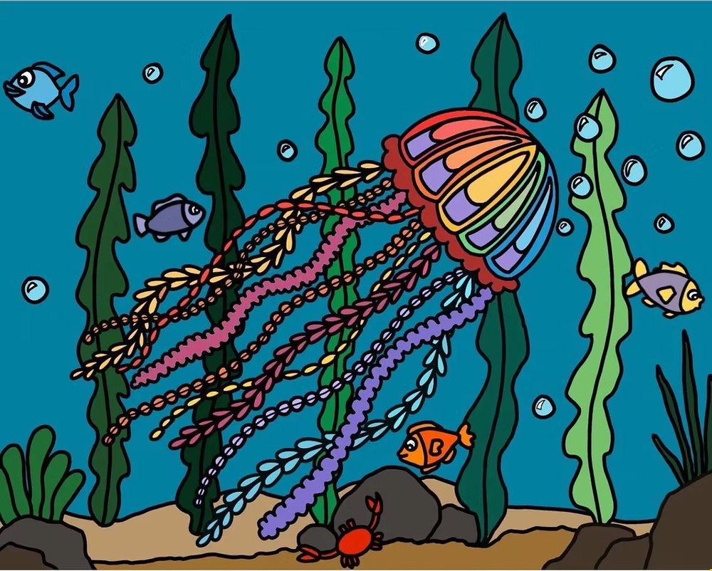
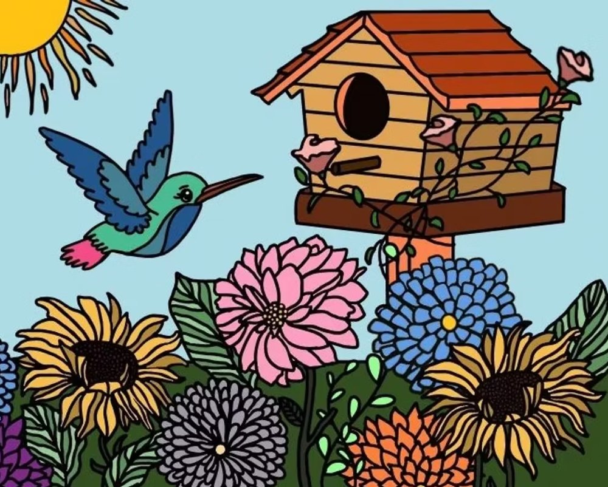
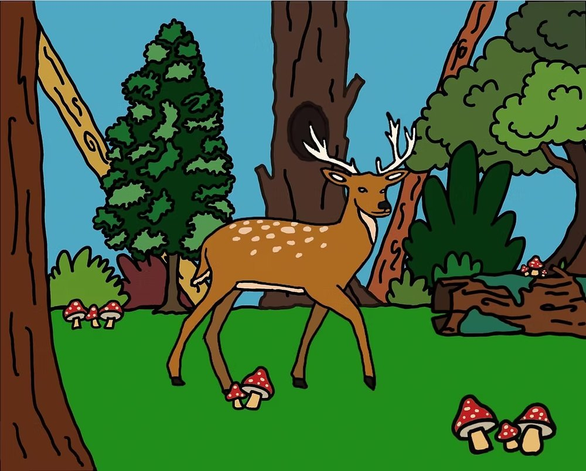
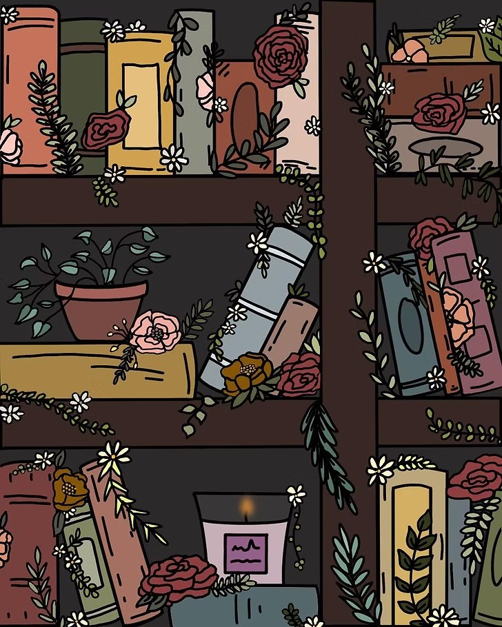
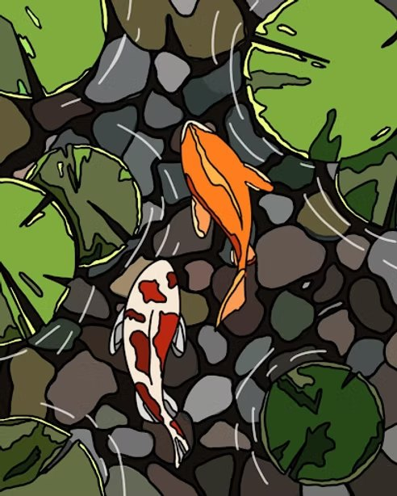
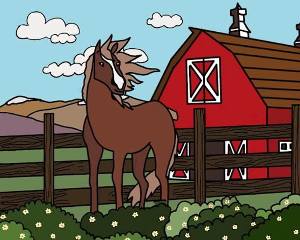

Our Designs
Every design here was created by the officers of CARES, then painted by our team for healthcare facilities.

Light in the Dark
Jellyfish use their bioluminescence to illuminate the unknown and to protect themselves through illusion. This piece is intended to inspire people to use their inner light to navigate during dark times like the pandemic.

Burst of Blooms
Throughout history, hummingbirds have been an important sign of life, freedom, and endurance. This art piece signifies staying true to these qualities, displaying many bright colors to symbolize joy and happiness.

Deep Into the Woods
This art piece was inspired by Robert Frost's poem, "Stopping by the Woods on a Snowy Evening". The literary work emphasizes the message of moving forward in life. One of the notable details in the piece is the description of the woods, which we try to emulate in this painting.

Wildest Dreams
As Mason Cooley, a popular American aphorist, once said, "Reading gives us someplace to go when we have to stay where we are." This painting reminds viewers to let their imagination run loose and turn to literature during hard times.

Tranquility
This piece shows the peace and serenity of koi ponds. In Japanese culture, koi ponds are often kept to bring good luck and good fortune. They are also associated with perseverance and strength.

Inner Strength
Horses are a symbol of endurance, confidence, and triumph. This piece reminds us the importance of these traits in the face of adversity.